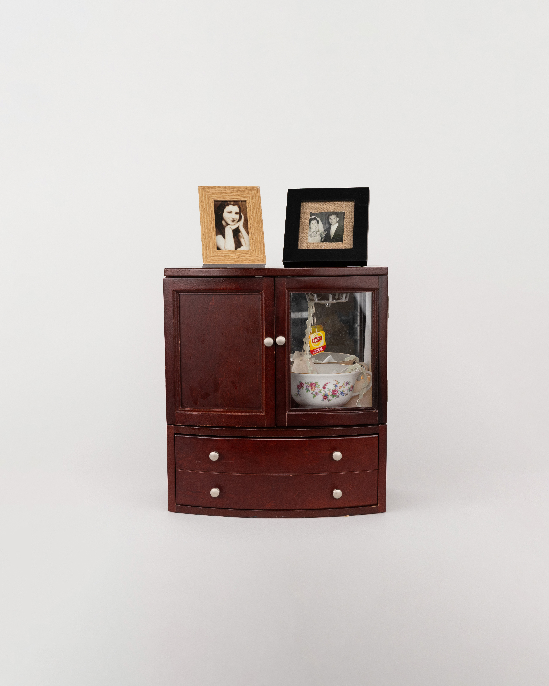
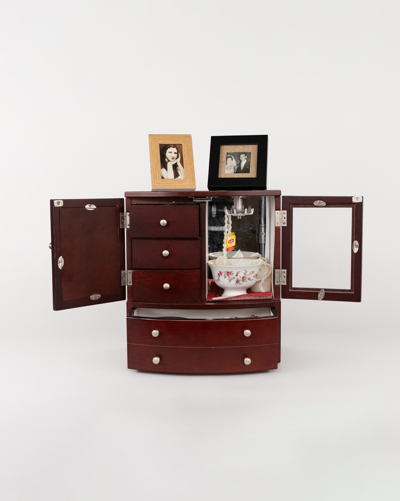
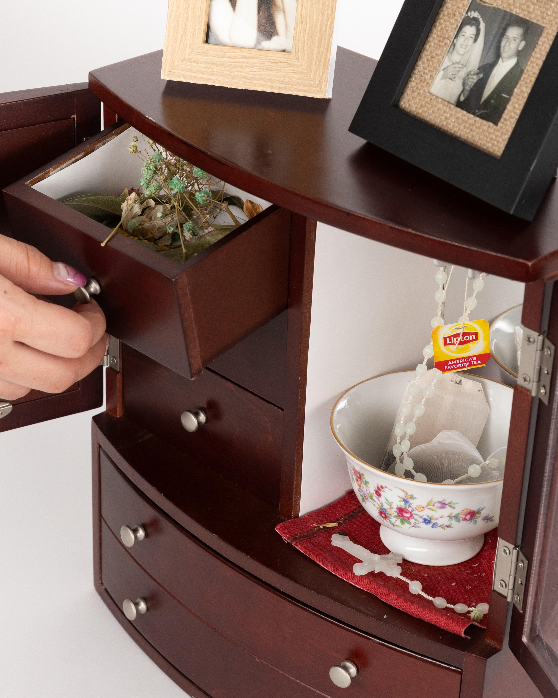
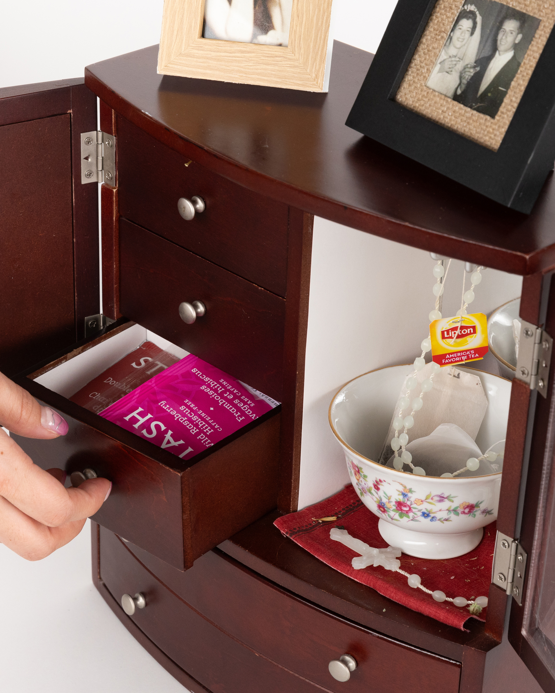
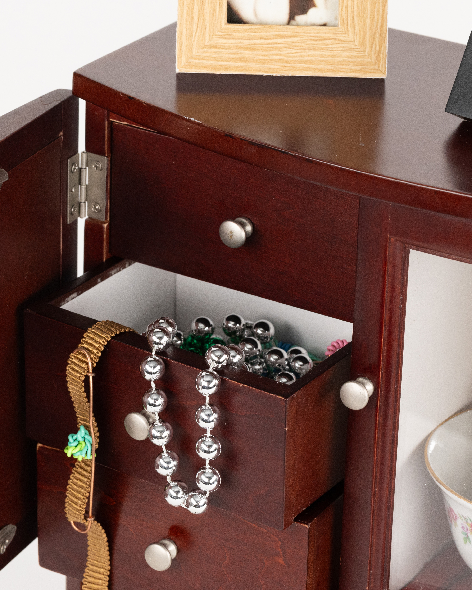
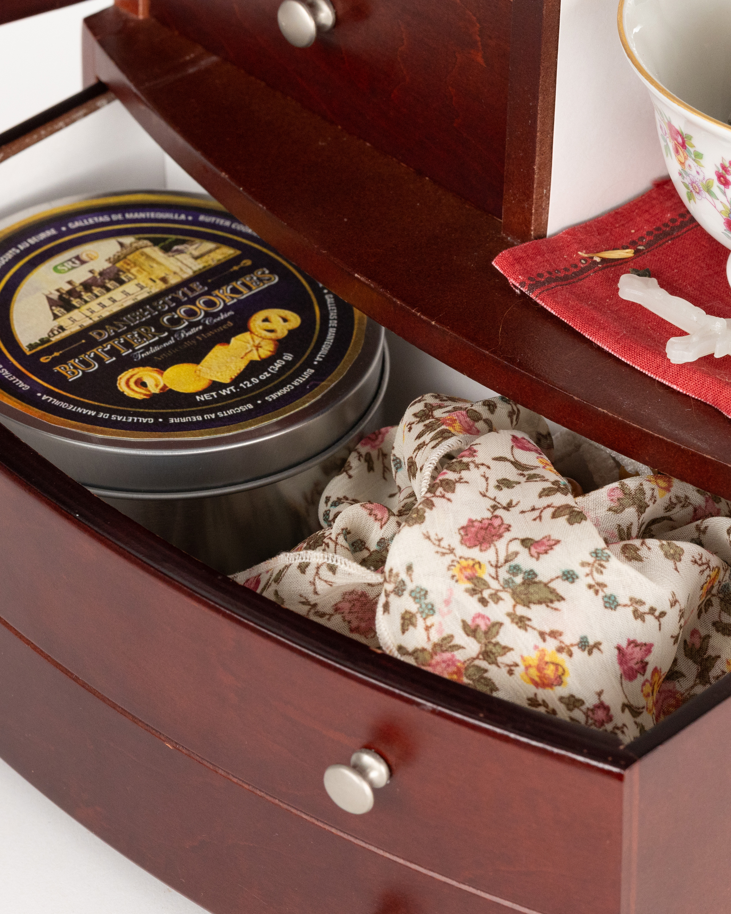
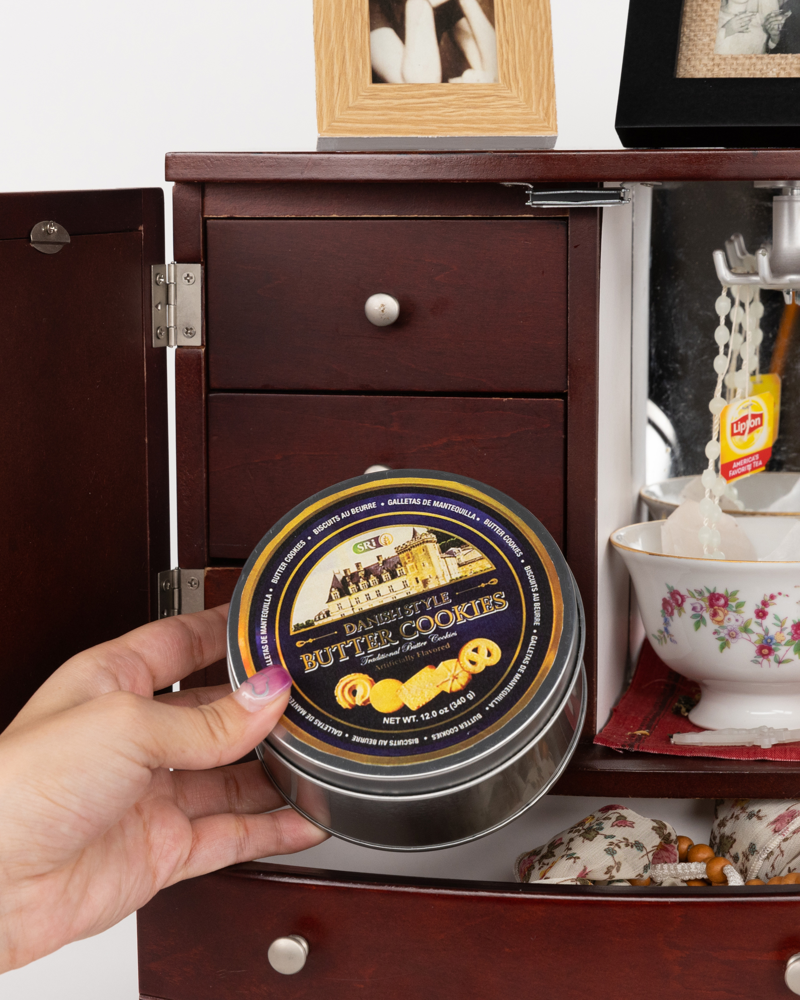
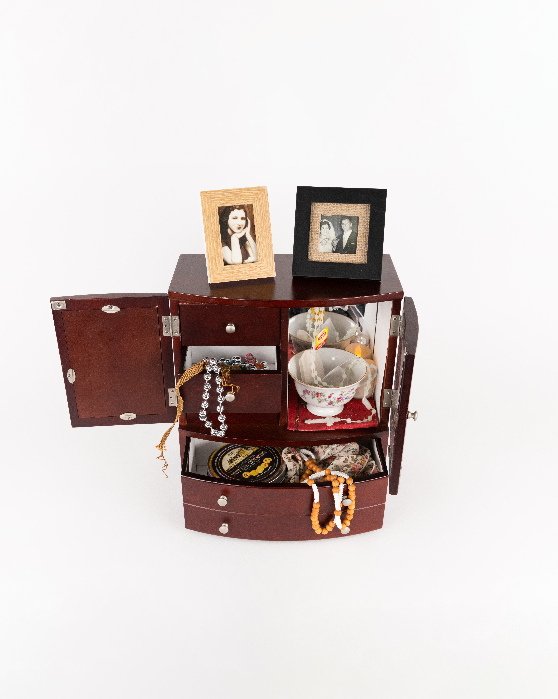

el tocador de la abuela
about
Touch and rummage. Take and enjoy any drinkable/eatable items.
A cabinet designed to recreate the experience of rummaging through a grandmother’s dresser or vanity. Made with found, reused, and altered materials, this memory is brought to life through tactile, scent, and visual elements.






